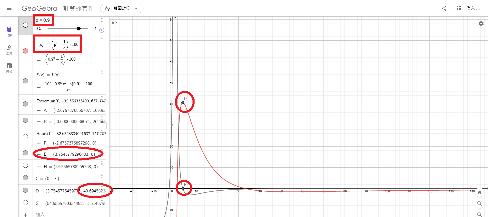
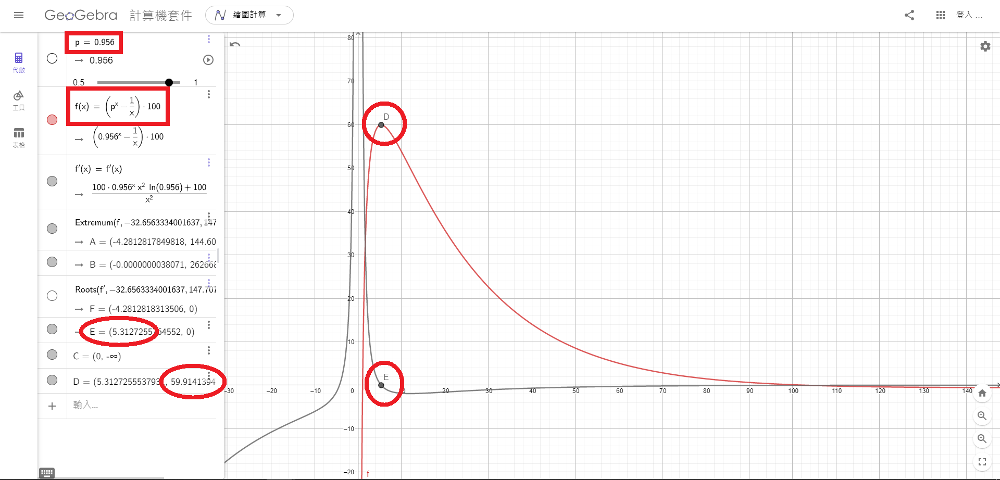
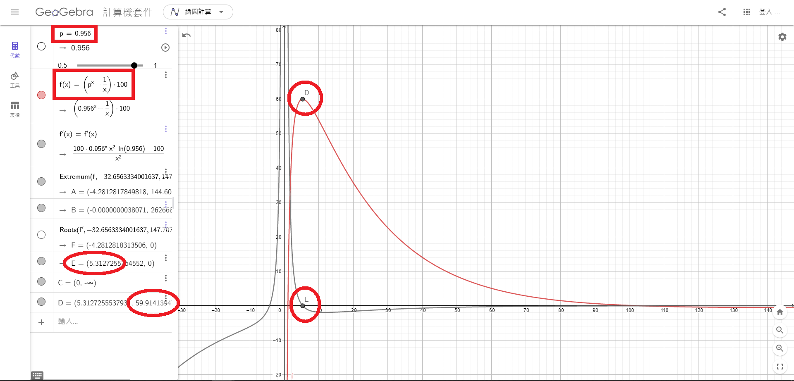
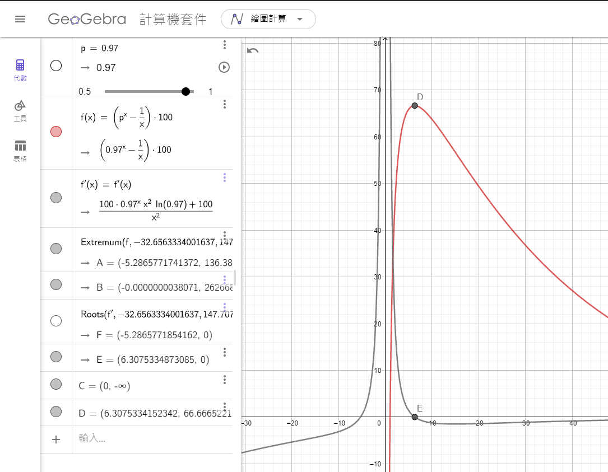
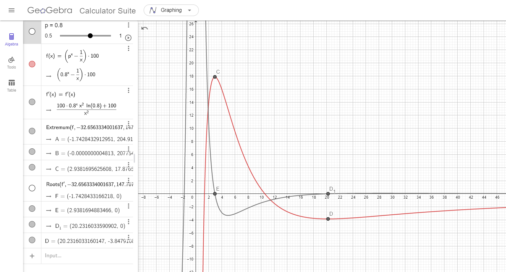
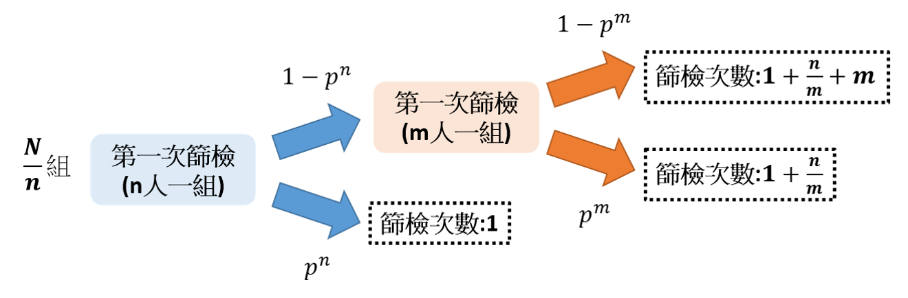
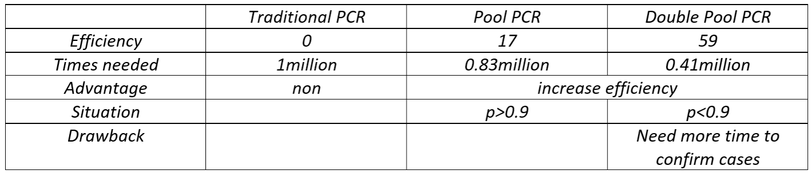

Minipool PCR
假設群體的總數是N，而健康率(陰性率)為p，若是我們以n人為一組的minipool PCR分析
則我們可以計算利用minipool PCR篩檢所需總次數的期望值：
在第一次篩檢之下，我們總共有\[\frac{N}{n}\]個小組
而每個小組陰性的條件，就是該小組的所有n人皆為健康的狀態，因此機率即為
\[p^n\]
反之每個pool出現陽性的機率即為
\[1-p^n\]
在做完第一階段的篩檢後，若是該pool為陰性的情形，即為該組所有人皆安全，反之若是出現陽性的pool則要針對每個人去作篩檢，找出帶原者，所以我們得再花費n次的篩檢量能
因此對整體的人作篩檢所需的期望值次數即為
\[\frac{N}{n}\left(p^n\times 1+\left(1-p^n\right)\times \left(1+n\right)\right)\]
若是利用傳統的篩檢方式即為針對每一個人去個別篩檢，則對總共N個人，所需的次數就是N
現在我們想要比較傳統的個別篩檢，以及透過mini pool pcr篩檢策略所提高的效率(efficiency)，因此使用以下公式
\[\mathrm{E}\mathrm{fficency=}\frac{傳統PCR次數-MiniPoolPCR次數}{傳統PCR次數}\]
舉例來說 一般我們篩檢100個人就是需要花費100次，但是若是我們的策略可以只花40次，就可以篩檢完畢找出帶原者，則我們策略的效率直即為
\[\mathrm{E}\mathrm{ffiency=}\frac{\mathrm{100-40}}{\mathrm{100}}\mathrm{=60\%}\]
意即我們節省了60\%的篩檢資源，效率值越高代表我們節省了更多檢測資源。
在了解這樣的定義以後，我們把剛剛的代數結果帶到efficiency的公式當中
\[Effiency=\frac{N-\left(\frac{N}{n}\left(p^n\times 1+\left(1-p^n\right)\times \left(1+n\right)\right)\right)}{N}\]
\[\ \ \ \ \ \ \ \ \ \ \ \ =\frac{N-\left(\frac{N}{n}\left(p^n+1+n-p^n-np^n\right)\right)}{N}\]
\[=\frac{N-\left(\frac{N}{n}\left(1+n-np^n\right)\right)}{N}\ \ \ \ \ \ \ \ \]
\[=\frac{N-\left(\frac{N}{n}+N-Np^n\right)}{N}\ \ \ \ \ \ \ \ \ \ \ \ \ \ \]
\[=\frac{Np^n-\frac{N}{n}}{N}\ \ \ \ \ \ \ \ \ \ \ \ \ \ \ \ \ \ \ \ \ \ \ \ \ \ \ \ \ \ \ \ \ \ \ \ \]
\[=p^n-\frac{1}{n}\mathrm{\ \ \ \ \ \ \ \ \ \ \ \ \ \ \ \ \ \ \ \ \ \ \ \ \ \ \ \ \ \ \ \ \ \ \ \ \ \ \ \ \ }\]
也就是說我們只要先隨機抽樣族群內部的感染率或是健康率p以後，我們就可以帶到這個公式找到提高效率的最好的小組人數n
為了得到更有sense的數值結果，我們可以用geogebra的數學軟體分析，首先我們先定義
\[\mathrm{f}\mathrm{(x)=}p^x-\frac{1}{x}\mathrm{\ \ }\]
x為我們的小組人數 而p定義為0$\mathrm{\sim}$1 即為我們的健康率

那可以看到我們丟到f(x)以後，效率值有個最高點D=40%，表示節省了40趴的醫療資源，同時將f(x)微分取0得到E點即為我們的小組人數約為每組3.7人一組
可見我們的Minipool pcr確實是可以節省醫療資源的
 現在我們把台北的狀況也帶入計算看看，假設6/3陽性率是4.4\%，也就是說健康率為95.6\%

由此可見在95.6\%的健康率之下，我們的小組可以取5.3人一組，而節省的檢測效率可以高達59\%。
現在我們把台北的狀況也帶入計算看看，假設6/3陽性率是4.4\%，也就是說健康率為95.6\%

由此可見在95.6\%的健康率之下，我們的小組可以取5.3人一組，而節省的檢測效率可以高達59\%。
此外，台北所提供的陽性率是利用快篩，會有偽陽性的狀況，實際上感染率可能更低，大約只有3\%

由此可見，我們取6人一組，可以節省高達67\%的醫療資源，這麼好的技術還不用嗎? 假設我要檢驗100萬人，現在我只需檢驗33萬次就好了! 省了將近3倍的篩檢量能呢!
Pool PCR 2.0
現在我們已經知道利用PCR可以大幅提高檢測的效率，但是很快就會發現，poolpcr只是用於低感染率的地方，舉例來說剛剛原本測試的poolpcr計算的都是低感染率(p$\mathrm{>}$0.9的情形)。若是感染率變得十分嚴重的狀況(p$\mathrm{\sim}$0.8)的情形又該怎麼辦呢?

因此利用同樣的原理我想出了double pool pcr策略，就是第一次的pool取更多人一組，若是檢測結果為陽性，再以第二次pool pcr檢測，若是仍呈陽性再分別檢測。也就是說第一次我先以n人為一組，若是呈現陽性我再將n人以m人一組分成n/m個小組分別檢測，若是呈陽性再將此小組的m人分別篩檢

也就是說在健康率為p的狀況下，對N個人做double pool pcr檢測，所需檢測次數的期望值即為
\[\frac{N}{n}\left(p^n\times 1+\left(1-p^n\right)\left(\ p^m\left(1+\frac{n}{m}\right)+\left(1-p^m\right)\left(1+\frac{n}{m}+m\right)\right)\right)\]
\textit{帶回我們的Efficiency 公式}
\[\mathrm{E}\mathrm{fficency=}\frac{傳統PCR次數-MiniPoolPCR次數}{傳統PCR次數}\]
\[=\frac{N-\frac{N}{n}\left(p^n\times 1+\left(1-p^n\right)\left(\ p^m\left(1+\frac{n}{m}\right)+\left(1-p^m\right)\left(1+\frac{n}{m}+m\right)\right)\right)}{N}\]
\[=1-\frac{1}{n}\left(p^n\times 1+\left(1-p^n\right)\left(\ p^m\left(1+\frac{n}{m}\right)+\left(1-p^m\right)\left(1+\frac{n}{m}+m\right)\right)\right)\]
那我們來計算這樣的效率可以提高多少，假設原本用pool pcr在p=0.8條件下Efficiency maxima 17\%，但是如果利用double pool pcr我們以n=20,m=4，我們可以得到效率值極大化的E=59\%
也就是說篩檢100萬人，傳統篩檢需要100萬次，而pool pcr需要83萬次，而double pool pcr 需要38萬次，仍然節省了將近三倍的醫療效能
